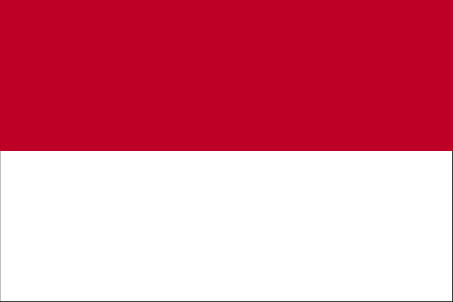
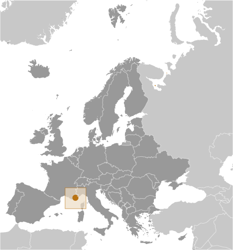
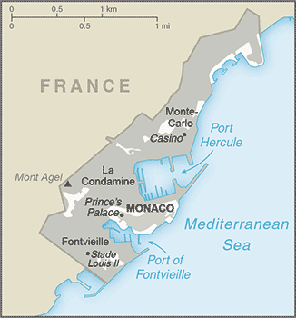

Europe :: MONACO
Introduction :: MONACO
-
The Genoese built a fortress on the site of present day Monaco in 1215. The current ruling GRIMALDI family first seized temporary control in 1297, and again in 1331, but was not able to permanently secure its holding until 1419. Economic development was spurred in the late 19th century with a railroad linkup to France and the opening of a casino. Since then, the principality's mild climate, splendid scenery, and gambling facilities have made Monaco world famous as a tourist and recreation center.
Geography :: MONACO
-
Western Europe, bordering the Mediterranean Sea on the southern coast of France, near the border with Italy43 44 N, 7 24 EEuropetotal: 2 sq kmland: 2 sq kmwater: 0 sq kmcountry comparison to the world: 253about three times the size of the National Mall in Washington, DCtotal: 6 kmborder countries (1): France 6 km4.1 kmterritorial sea: 12 nmexclusive economic zone: 12 nmMediterranean with mild, wet winters and hot, dry summershilly, rugged, rockymean elevation: NAelevation extremes: lowest point: Mediterranean Sea 0 mhighest point: Chemin des Révoires on Mont Agel 162 mnoneagricultural land: 1%arable land 0%; permanent crops 1%; permanent pasture 0%forest: 0%other: 99% (2011 est.)0 sq km (2012)the most densely populated country in the world; its entire population living on 2 square kmnoneNA no serious issues; actively monitors pollution levels in air and waterparty to: Air Pollution, Air Pollution-Sulfur 94, Air Pollution-Volatile Organic Compounds, Biodiversity, Climate Change, Climate Change-Kyoto Protocol, Desertification, Endangered Species, Hazardous Wastes, Law of the Sea, Marine Dumping, Ozone Layer Protection, Ship Pollution, Wetlands, Whalingsigned, but not ratified: none of the selected agreementssecond-smallest independent state in the world (after the Holy See); smallest country with a coastline; almost entirely urban
People and Society :: MONACO
-
30,645 (July 2017 est.)note: immigrants make up more than 55% of the total population, according to UN data (2015)country comparison to the world: 217noun: Monegasque(s) or Monacan(s)adjective: Monegasque or MonacanFrench (official) 47%, Monegasque 16%, Italian 16%, other 21%French (official), English, Italian, MonegasqueRoman Catholic 90% (official), other 10%0-14 years: 10.68% (male 1,685/female 1,587)15-24 years: 9.27% (male 1,464/female 1,376)25-54 years: 32.91% (male 5,067/female 5,018)55-64 years: 14.94% (male 2,286/female 2,292)65 years and over: 32.21% (male 4,387/female 5,483) (2017 est.)total: 53.1 yearsmale: 51.7 yearsfemale: 54.5 years (2017 est.)country comparison to the world: 10.24% (2017 est.)country comparison to the world: 1846.6 births/1,000 population (2017 est.)country comparison to the world: 2269.8 deaths/1,000 population (2017 est.)country comparison to the world: 445.7 migrant(s)/1,000 population (2017 est.)country comparison to the world: 21the most densely populated country in the world; its entire population living on 2 square kmurban population: 100% of total population (2017)rate of urbanization: 0.8% annual rate of change (2015-20 est.)MONACO (capital) 38,000 (2014)at birth: 1.04 male(s)/female0-14 years: 1.06 male(s)/female15-24 years: 1.06 male(s)/female25-54 years: 1 male(s)/female55-64 years: 0.99 male(s)/female65 years and over: 0.81 male(s)/femaletotal population: 0.95 male(s)/female (2016 est.)total: 1.8 deaths/1,000 live birthsmale: 2.1 deaths/1,000 live birthsfemale: 1.6 deaths/1,000 live births (2017 est.)country comparison to the world: 225total population: 89.4 yearsmale: 85.6 yearsfemale: 93.5 years (2017 est.)country comparison to the world: 11.53 children born/woman (2017 est.)country comparison to the world: 1934.3% of GDP (2014)country comparison to the world: 1606.65 physicians/1,000 population (2014)13.8 beds/1,000 population (2012)improved:urban: 100% of populationtotal: 100% of populationunimproved:urban: 0% of populationtotal: 0% of population (2015 est.)improved:urban: 100% of populationrural: NAtotal: 100% of populationunimproved:urban: 0% of populationrural: NAtotal: 0% of population (2015 est.)NANANA1% of GDP (2014)country comparison to the world: 169
Government :: MONACO
-
conventional long form: Principality of Monacoconventional short form: Monacolocal long form: Principaute de Monacolocal short form: Monacoetymology: founded as a Greek colony in the 6th century B.C., the name derives from two Greek words "monos" (single, alone) and "oikos" (house) to convey the sense of a people "living apart" or in a "single habitation"constitutional monarchyname: Monacogeographic coordinates: 43 44 N, 7 25 Etime difference: UTC+1 (6 hours ahead of Washington, DC, during Standard Time)daylight saving time: +1hr, begins last Sunday in March; ends last Sunday in Octobernone; there are no first-order administrative divisions as defined by the US Government, but there are 4 quarters (quartiers, singular - quartier); Fontvieille, La Condamine, Monaco-Ville, Monte-Carlo; note - Moneghetti, a part of La Condamine, is sometimes called the 5th quarter of Monaco1419 (beginning of permanent rule by the House of GRIMALDI)National Day (Saint Rainier's Day), 19 November (1857)history: previous 1911 (suspended 1959); latest adopted 17 December 1962amendments: proposed by joint agreement of the chief of state (the prince) and the National Council; passage requires two-thirds majority vote of National Council members; amended 2002 (2016)civil law system influenced by French legal traditionhas not submitted an ICJ jurisdiction declaration; non-party state to the ICCtcitizenship by birth: nocitizenship by descent only: the father must be a citizen of Monaco; in the case of a child born out of wedlock, the mother must be a citizen and father unknowndual citizenship recognized: noresidency requirement for naturalization: 10 years18 years of age; universalchief of state: Prince ALBERT II (since 6 April 2005)head of government: Minister of State Serge TELLE (since 1 February 2016)cabinet: Council of Government under the authority of the monarchelections/appointments: the monarchy is hereditary; minister of state appointed by the monarch from a list of three French national candidates presented by the French Governmentdescription: unicameral National Council or Conseil National (24 seats; 16 members directly elected in multi-seat constituencies by simple majority vote and 8 directly elected by proportional representation vote; members serve 5-year terms)elections: last held on 10 February 2013 (next to be held in February 2018)election results: percent of vote by party - Horizon Monaco 50.3%, Union Monegasque 39.0%, Renaissance 10.7%; seats by party - Horizon Monaco 20, Union Monegasque 3, Renaissance 1highest court(s): Supreme Court (consists of 5 permanent members and 2 substitutes)judge selection and term of office: Supreme Court members appointed by the monarch upon the proposals of the National Council, State Council, Crown Council, Court of Appeal, and Trial Courtsubordinate courts: Court of Appeal; Civil Court of First InstanceHorizon Monaco [Laurent NOUVION]Renaissance [SBM (public corporation)]Union Monegasque [Jean-Francois ROBILLON]NACD, CE, FAO, IAEA, ICAO, ICC (national committees), ICRM, IFRCS, IHO, IMO, IMSO, Interpol, IOC, IPU, ITSO, ITU, OAS (observer), OIF, OPCW, OSCE, Schengen Convention (de facto member), UN, UNCTAD, UNESCO, UNIDO, Union Latina, UNWTO, UPU, WHO, WIPO, WMOchief of mission: Ambassador Maguy MACCARIO-DOYLE (since 3 December 2013)chancery: 3400 International Drive NW, Suite 2K-100, Washington, DC 20008telephone: (202) 234-1530FAX: (202) 244-7656consulate(s) general: New Yorkthe US does not have an embassy in Monaco; the US Ambassador to France is accredited to Monaco; the US Consul General in Marseille (France), under the authority of the US Ambassador to France, handles diplomatic and consular matters concerning Monacotwo equal horizontal bands of red (top) and white; the colors are those of the ruling House of Grimaldi and have been in use since 1339, making the flag one of the world's oldest national bannersnote: similar to the flag of Indonesia which is longer and the flag of Poland which is white (top) and redred and white lozenges (diamond shapes); national colors: red, whitename: "A Marcia de Muneghu" (The March of Monaco)lyrics/music: Louis NOTARI/Charles ALBRECHTnote: music adopted 1867, lyrics adopted 1931; although French is commonly spoken, only the Monegasque lyrics are official; the French version is known as "Hymne Monegasque" (Monegasque Anthem); the words are generally only sung on official occasions
Economy :: MONACO
-
Monaco, bordering France on the Mediterranean coast, is a popular resort, attracting tourists to its casino and pleasant climate. The principality also is a banking center and has successfully sought to diversify into services and small, high-value-added, nonpolluting industries. The state retains monopolies in a number of sectors, including tobacco, the telephone network, and the postal service. Living standards are high, roughly comparable to those in prosperous French metropolitan areas.The state has no income tax and low business taxes and thrives as a tax haven both for individuals who have established residence and for foreign companies that have set up businesses and offices. Monaco, however, is not a tax-free shelter; it charges nearly 20% value-added tax, collects stamp duties, and companies face a 33% tax on profits unless they can show that three-quarters of profits are generated within the principality. Monaco was formally removed from the OECD's "grey list" of uncooperative tax jurisdictions in late 2009, but continues to face international pressure to abandon its banking secrecy laws and help combat tax evasion. In October 2014, Monaco officially became the 84th jurisdiction participating in the OECD’s Multilateral Convention on Mutual Administrative Assistance in Tax Matters, an effort to combat offshore tax avoidance and evasion.Monaco's reliance on tourism and banking for its economic growth has left it vulnerable to a downturn in France and other European economies which are the principality's main trade partners. In 2009, Monaco's GDP fell by 11.5% as the euro-zone crisis precipitated a sharp drop in tourism and retail activity and home sales. A modest recovery ensued in 2010 and intensified in 2013, with GDP growth of more than 9%, but Monaco's economic prospects remain uncertain, and tied to future euro-zone growth.$7.672 billion (2015 est.)$7.279 billion (2014 est.)$6.79 billion (2013 est.)note: data are in 2015 US dollarscountry comparison to the world: 164$6.006 billion (2013 est.)5.4% (2015 est.)7.2% (2014 est.)9.6% (2013 est.)country comparison to the world: 29$115,700 (2015 est.)$109,200 (2014 est.)$101,900 (2013 est.)country comparison to the world: 3agriculture: 0%industry: 14%services: 86% (2013)nonebanking, insurance, tourism, construction, small-scale industrial and consumer products6.8% (2015)country comparison to the world: 2652,000note: includes all foreign workers (2014 est.)country comparison to the world: 191agriculture: 0%industry: 16.1%services: 83.9% (2012 est.)2% (2012)country comparison to the world: 15NA%lowest 10%: NA%highest 10%: NA%revenues: $914.5 millionexpenditures: $973 million (2011 est.)15.2% of GDP (2011 est.)country comparison to the world: 188-1% of GDP (2011 est.)country comparison to the world: 68calendar year1.5% (2010)country comparison to the world: 108$NA$964.6 million (2017 est.)$1.115 billion (2011)note: full customs integration with France, which collects and rebates Monegasque trade duties; also participates in EU market system through customs union with Francecountry comparison to the world: 159$1.371 billion (2017 est.)$1.162 billion (2011 est.)note: full customs integration with France, which collects and rebates Monegasque trade duties; also participates in EU market system through customs union with Francecountry comparison to the world: 171$NAeuros (EUR) per US dollar -0.9214 (2016 est.)0.885 (2015 est.)0.885 (2014 est.)0.7634 (2013 est.)0.7752 (2012 est.)
Energy :: MONACO
-
electrification - total population: 100% (2016)
Communications :: MONACO
-
total subscriptions: 46,575subscriptions per 100 inhabitants: 152 (July 2016 est.)country comparison to the world: 162total: 33,297subscriptions per 100 inhabitants: 109 (July 2016 est.)country comparison to the world: 207general assessment: modern automatic telephone system; the country's sole fixed-line operator offers a full range of services to residential and business customersdomestic: combined fixed-line and mobile-cellular teledensity exceeds 250 per 100 personsinternational: country code - 377; no satellite earth stations; connected by cable into the French communications system (2016)TV Monte-Carlo operates a TV network; cable TV available; Radio Monte-Carlo has extensive radio networks in France and Italy with French-language broadcasts to France beginning in the 1960s and Italian-language broadcasts to Italy beginning in the 1970s; other radio stations include Riviera Radio and Radio Monaco (2012).mctotal: 29,116percent of population: 95.2% (July 2016 est.)country comparison to the world: 199
Transportation :: MONACO
-
3A (2016)1 (2012)total: 77 kmpaved: 77 km (2010)country comparison to the world: 218registered in other countries: 64 (Bahamas 8, Bermuda 2, Liberia 8, Malta 3, Marshall Islands 30, Panama 11, Saint Vincent and the Grenadines 2) (2010)country comparison to the world: 64major seaport(s): Monaco
Military and Security :: MONACO
-
no regular military forces; Directorate of Public Security (2012)defense is the responsibility of France
Transnational Issues :: MONACO
-
none